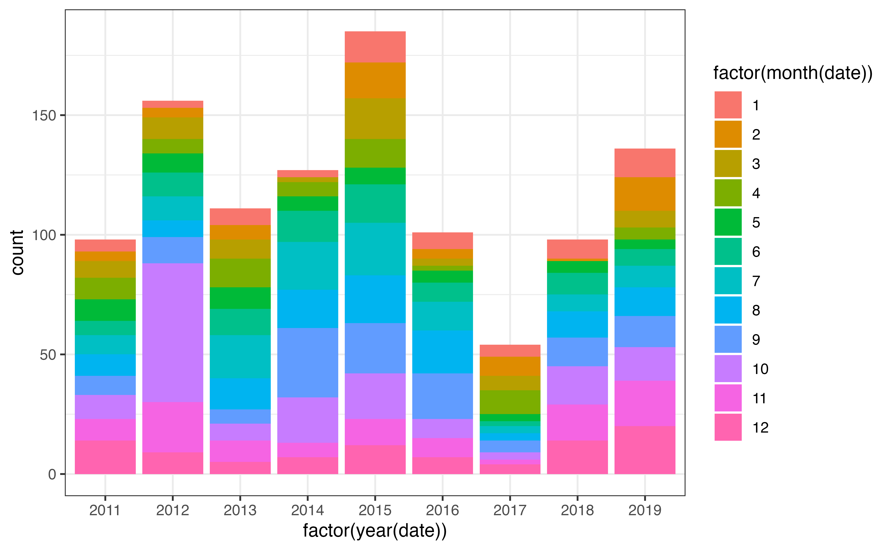
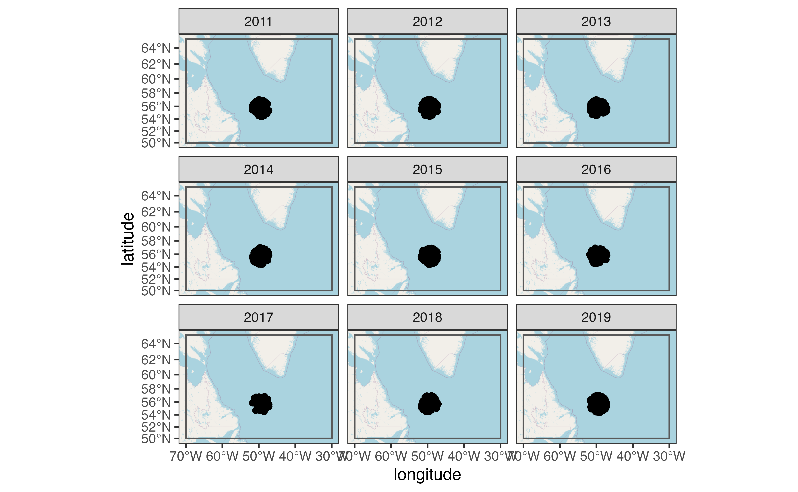
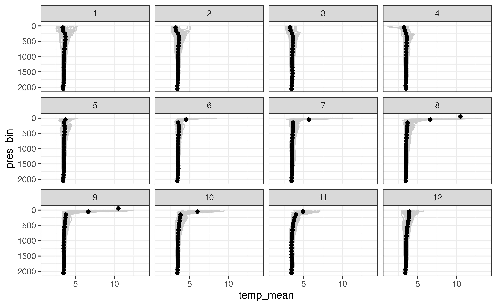
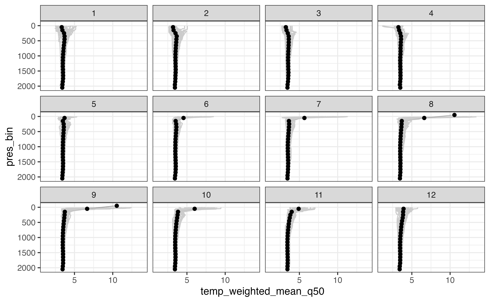
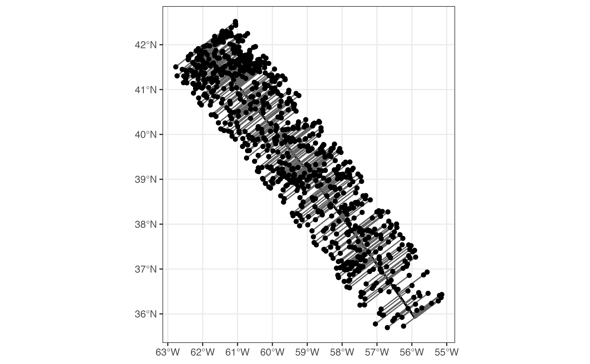
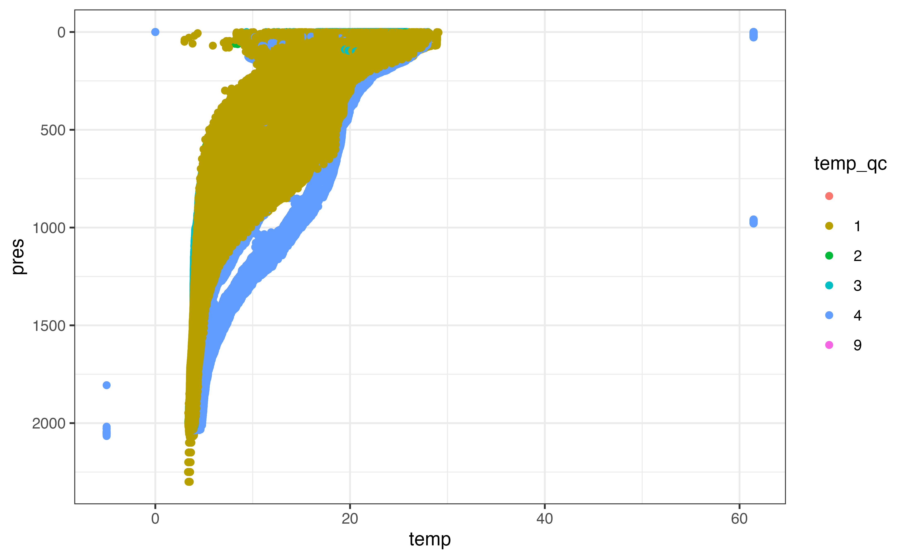
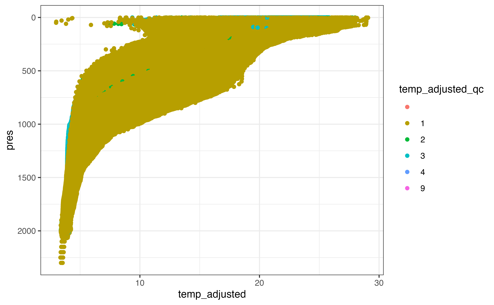
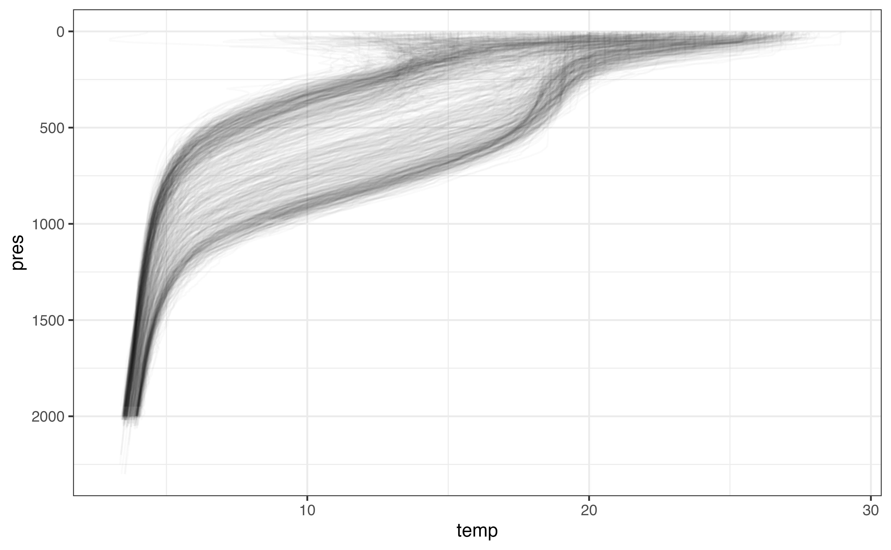
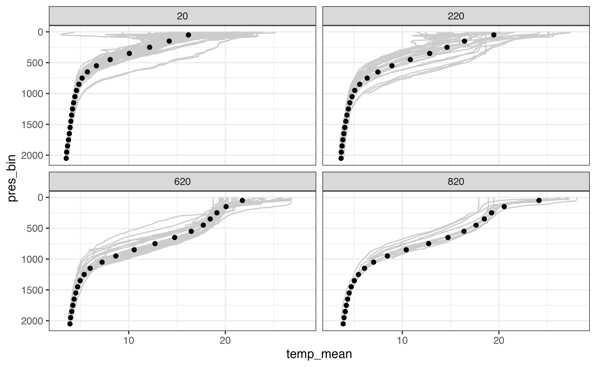
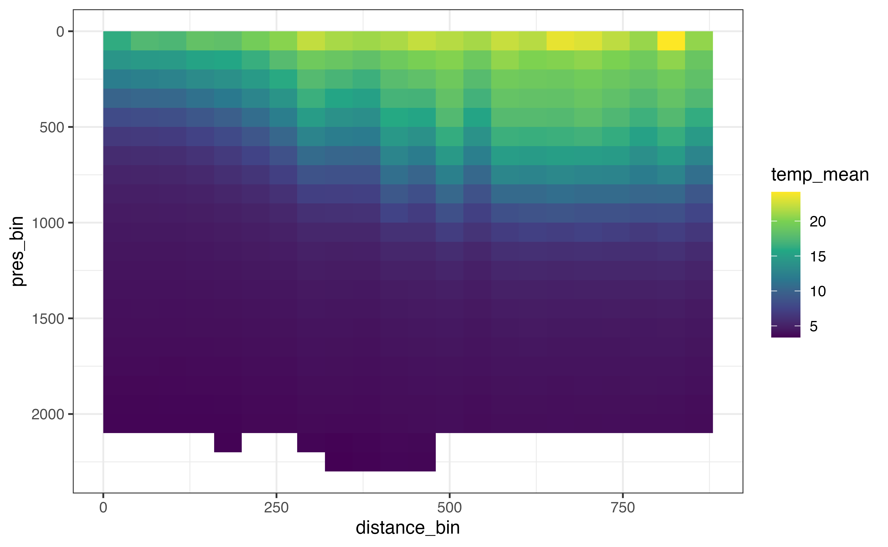

Example: Virtual moorings and sections
Source:vignettes/articles/virtual-mooring.Rmd
virtual-mooring.RmdThe Argo international research program has collected millions of profiles from the world’s oceans over the last several decades. The data set has excellent spatial and temporal coverage and is well-suited to problems that require looking back in time to obtain oceanographic measurements where ship- or mooring-based data are not available. This article covers methods that can be used to combine multiple Argo profiles into a virtual mooring or section.
We’ll start by loading a few packages. In addition to argodata, we’ll use the tidyverse, lubridate, and later on we’ll use ggspatial (for map mapking) and s2 (for geometry calculations on the sphere). You can learn about the table manipulation functions and visualization functions we use here in the free online book R for Data Science (also available in French, Spanish, German, and Portuguese).
Fetch
The first step is to choose which area is representative of the region for which you would like to create an aggregated/summarized set of profiles. One way to do this is using a point and radius, for which argo_filter_radius() is provided to subset the global profile index argo_global_prof(). For example, the following point/radius results in approximately 475 profiles between Labrador and Greenland in the Labrador Sea. For the purposes of the virtual mooring, the radius needs to be small enough that the profiles are related to the conditions in the region you are attempting to model and large enough that there are enough profiles for window point of time you would like to model.
mooring_lat <- 55.7
mooring_lon <- -49.5
mooring_radius_km <- 150The next step is to (optionally) choose a window of time to consider. For the purposes of this article, we’ll consider the years between 2011 and 2019, inclusive.
An index of all profiles available from the Argo program is available by calling argo_global_prof(). This will take 20-60 seconds to load depending on your internet connection; if you would like to avoid downloading the index file more than once you can configure a persistent cache directory, but be aware that this index is updated frequently.
profiles <- argo_global_prof() %>%
argo_filter_radius(
latitude = mooring_lat,
longitude = mooring_lon,
radius_km = mooring_radius_km
) %>%
argo_filter_date(
date_min = mooring_start,
date_max = mooring_end
) %>%
argo_extract_path_info() %>%
select(file, file_float, date, latitude, longitude, everything()) %>%
arrange(date)
profiles
#> # A tibble: 1,066 × 14
#> file file_float date latitude longitude file_type file_cycle
#> <chr> <chr> <dttm> <dbl> <dbl> <chr> <int>
#> 1 corio… 6900562 2011-01-04 18:46:44 56.4 -51.5 prof 58
#> 2 corio… 6900555 2011-01-10 16:40:12 56.4 -47.6 prof 60
#> 3 corio… 6900562 2011-01-19 18:10:01 56.1 -51.7 prof 59
#> 4 meds/… 4900683 2011-01-27 03:55:00 54.7 -49.0 prof 170
#> 5 meds/… 4901152 2011-01-27 23:17:00 55.3 -47.2 prof 26
#> 6 meds/… 4900683 2011-02-06 07:13:00 55.0 -48.7 prof 171
#> 7 meds/… 4900683 2011-02-16 03:49:00 55.2 -47.9 prof 172
#> 8 corio… 6900562 2011-02-18 17:56:00 56.4 -51.2 prof 61
#> 9 meds/… 4901123 2011-02-25 08:59:00 56.7 -50.8 prof 65
#> 10 meds/… 4901123 2011-03-07 11:33:00 56.7 -50.9 prof 66
#> # … with 1,056 more rows, and 7 more variables: file_data_mode <chr>,
#> # file_modifier <chr>, file_descending <lgl>, ocean <chr>,
#> # profiler_type <dbl>, institution <chr>, date_update <dttm>A good sanity check is to examine the distribution of profiles in space and time, as we’ll be spending a lot of time examining the interactions between these dimensions. Below I’ve created a bar plot to examine the distribution of profiles both within and between years: there is a lot of variability! We will come back to this later on.

For a quick view of the locations I used the ggspatial package:
library(ggspatial)
ggplot(profiles, aes(x = longitude, y = latitude)) +
annotation_map_tile(zoomin = -1, progress = "none") +
geom_spatial_rect(
aes(ymin = 50, ymax = 65, xmin = -70, xmax = -30),
fill = NA,
# data = tibble(x = NA),
inherit.aes = FALSE,
crs = 4326
) +
geom_spatial_point(crs = 4326) +
facet_wrap(vars(year(date)))
You can use plots like this to ensure that you have a reasonable density of samples in both space and time for the question you are trying to answer. Once you’ve done this, you can load profile levels using argo_prof_levels(). This will download the files from the Argo server and load them into a table with one row per profile per sampling level. This will take about 90 seconds depending on your internet connection and system configuration.
levels <- argo_prof_levels(profiles) %>%
select(file, pres, temp, temp_qc, everything())
#> Downloading 1066 files from 'https://data-argo.ifremer.fr'
#> Extracting from 1066 files
levels
#> # A tibble: 654,686 × 18
#> file pres temp temp_qc n_levels n_prof pres_qc pres_adjusted
#> <chr> <dbl> <dbl> <chr> <int> <int> <chr> <dbl>
#> 1 coriolis/6900562/p… 10 5.20 1 1 1 1 8.10
#> 2 coriolis/6900562/p… 19.9 5.23 1 2 1 1 18
#> 3 coriolis/6900562/p… 30.5 5.20 1 3 1 1 28.6
#> 4 coriolis/6900562/p… 40.5 5.07 1 4 1 1 38.6
#> 5 coriolis/6900562/p… 48 4.88 1 5 1 1 46.1
#> 6 coriolis/6900562/p… 60.5 4.87 1 6 1 1 58.6
#> 7 coriolis/6900562/p… 70.4 4.87 1 7 1 1 68.5
#> 8 coriolis/6900562/p… 80.2 4.86 1 8 1 1 78.3
#> 9 coriolis/6900562/p… 99.9 4.83 1 9 1 1 98
#> 10 coriolis/6900562/p… 120 4.81 1 10 1 1 118.
#> # … with 654,676 more rows, and 10 more variables: pres_adjusted_qc <chr>,
#> # pres_adjusted_error <dbl>, temp_adjusted <dbl>, temp_adjusted_qc <chr>,
#> # temp_adjusted_error <dbl>, psal <dbl>, psal_qc <chr>, psal_adjusted <dbl>,
#> # psal_adjusted_qc <chr>, psal_adjusted_error <dbl>Clean
Again, the first step once we have the data is to plot! Here I’ve coloured the points by the _qc column for temperature, since temperature is what we’ll be examining later on. There is a _qc column for most variables in the levels table; you can learn more about what each flag means in the argo_reference_qc_flag table or the Argo User’s Manual.
ggplot(levels, aes(y = pres, x = temp, col = temp_qc)) +
geom_point() +
scale_y_reverse()
#> Warning: Removed 369986 rows containing missing values (geom_point).
From this plot it’s clear that there are some points with clearly bad values that we need to take care of. A similar plot of pres_qc indicates that there are some bad pressure values as well. Depending what stage you are at in your analysis, you may want to remove rows that you can’t use in future analysis or set these values to NA. I’ll demonstrate the latter here using argo_qc_censor_if_not(), which sets values to NA where the paired _qc column is not in a specified vector of values. The only value that makes sense to keep based on a plot of our results is 1, which corresponds to “good data” in the reference table (beware that not all data marked “good” has been checked with the same degree of scrutiny!).
levels_clean <- levels %>%
argo_qc_censor_if_not(c(temp, pres), qc_flag = 1)
ggplot(levels_clean, aes(y = pres, x = temp)) +
geom_line(
aes(group = interaction(file, n_prof)),
orientation = "y",
alpha = 0.05
) +
scale_y_reverse()
#> Warning: Removed 375794 row(s) containing missing values (geom_path).
We’ve set a lot of values to NA - in some cases many profiles worth. While we do want to keep a record of levels even if the temperature was set to NA because of its _qc column value, we also don’t need profiles where there is little temperature information, and including them in our data moving forward is not useful.
Model
Bin/Aggregate
Combining information collected at specific locations over time is an entire subfield of spatial statistics. For our purposes, binning and aggregating along a few dimensions of interest is probably sufficient and should always be attempted before invoking a more complex method.
There are a few complexities associated with combining information from multiple profiles. Notably, there is a severe sampling bias: the nature of the Argo float is such that it collects detailed data along its trajectory which is clumped in both space and time. This means that certain areas and timeframes are intensely sampled whereas other areas and/or timeframes may have poor coverage. Another complexity is that certain locations may represent the “virtual mooring” location or region poorly.
We will mitigate the effects of both these complicating behaviours using weighting. To ensure that a single float does not contribute unduly to any particular prediction, we can weight each profile as 1 / n, where n is the number of profiles in a given time frame contributed by a single float. We can also weight profiles taken farther from the mooring location less than those taken close to the mooring location; however, the choice of how severely to punish profiles taken far from the mooring location makes a considerable difference to the result. One method is to use the inverse of the distance, which produces a rather severe punishment as distance from the centre increases. Here we will use 1 / sqrt(distance) to mitigate the penalty. The distance weights we can calculate before binning; the float weights depend on our choice of bins.
profile_weighted <- profiles %>%
mutate(
distance_km = s2::s2_distance(
s2::s2_lnglat(longitude, latitude),
s2::s2_lnglat(mooring_lon, mooring_lat)
) / 1000,
distance_weight = 1 / sqrt(distance_km)
) %>%
select(file, longitude, latitude, distance_km, distance_weight)
profile_weighted
#> # A tibble: 1,066 × 5
#> file longitude latitude distance_km distance_weight
#> <chr> <dbl> <dbl> <dbl> <dbl>
#> 1 coriolis/6900562/profiles/D69… -51.5 56.4 146. 0.0828
#> 2 coriolis/6900555/profiles/D69… -47.6 56.4 141. 0.0844
#> 3 coriolis/6900562/profiles/D69… -51.7 56.1 144. 0.0834
#> 4 meds/4900683/profiles/D490068… -49.0 54.7 118. 0.0921
#> 5 meds/4901152/profiles/D490115… -47.2 55.3 148. 0.0823
#> 6 meds/4900683/profiles/D490068… -48.7 55.0 92.3 0.104
#> 7 meds/4900683/profiles/D490068… -47.9 55.2 119. 0.0915
#> 8 coriolis/6900562/profiles/D69… -51.2 56.4 131. 0.0875
#> 9 meds/4901123/profiles/D490112… -50.8 56.7 140. 0.0845
#> 10 meds/4901123/profiles/D490112… -50.9 56.7 142. 0.0838
#> # … with 1,056 more rowsThe next step is to choose bins that are appropriate to the scale of the problem. In this case, we’re interested in monthly bins (regardless of year) and depth bins 10 decibars in height. These bin sizes reflect the amount of data we have: if we were only summarizing 2019, for which there are many profiles with high-resolution sampling intervals, we may be able to use smaller bins (e.g., one bin per month per year or 1 decibar height).
levels_binned <- levels_clean %>%
left_join(profiles %>% select(file, date), by = "file") %>%
mutate(
pres_bin = floor(pres / 100) * 100 + 50,
date_bin = month(date)
) %>%
select(pres_bin, date_bin, everything())
levels_binned
#> # A tibble: 258,500 × 21
#> pres_bin date_bin file pres temp temp_qc n_levels n_prof pres_qc
#> <dbl> <dbl> <chr> <dbl> <dbl> <chr> <int> <int> <chr>
#> 1 50 1 coriolis/69005… 10 5.20 1 1 1 1
#> 2 50 1 coriolis/69005… 19.9 5.23 1 2 1 1
#> 3 50 1 coriolis/69005… 30.5 5.20 1 3 1 1
#> 4 50 1 coriolis/69005… 40.5 5.07 1 4 1 1
#> 5 50 1 coriolis/69005… 48 4.88 1 5 1 1
#> 6 50 1 coriolis/69005… 60.5 4.87 1 6 1 1
#> 7 50 1 coriolis/69005… 70.4 4.87 1 7 1 1
#> 8 50 1 coriolis/69005… 80.2 4.86 1 8 1 1
#> 9 50 1 coriolis/69005… 99.9 4.83 1 9 1 1
#> 10 150 1 coriolis/69005… 120 4.81 1 10 1 1
#> # … with 258,490 more rows, and 12 more variables: pres_adjusted <dbl>,
#> # pres_adjusted_qc <chr>, pres_adjusted_error <dbl>, temp_adjusted <dbl>,
#> # temp_adjusted_qc <chr>, temp_adjusted_error <dbl>, psal <dbl>,
#> # psal_qc <chr>, psal_adjusted <dbl>, psal_adjusted_qc <chr>,
#> # psal_adjusted_error <dbl>, date <dttm>Next we can calculate the weights to ensure each profile does not contribute more than its share to the values calculated for a given bin and apply the weights based on distance we calculated above.
levels_binned_weighted <- levels_binned %>%
group_by(pres_bin, date_bin, file, n_prof) %>%
mutate(profile_weight = 1 / n()) %>%
ungroup() %>%
left_join(profile_weighted, by = "file") %>%
mutate(weight = profile_weight * distance_weight) %>%
group_by(pres_bin, date_bin) %>%
mutate(weight = weight / sum(weight)) %>%
ungroup() %>%
select(pres_bin, date_bin, weight, file, date, pres, temp, everything())
levels_binned_weighted
#> # A tibble: 258,500 × 27
#> pres_bin date_bin weight file date pres temp temp_qc
#> <dbl> <dbl> <dbl> <chr> <dttm> <dbl> <dbl> <chr>
#> 1 50 1 0.00161 coriolis/6… 2011-01-04 18:46:44 10 5.20 1
#> 2 50 1 0.00161 coriolis/6… 2011-01-04 18:46:44 19.9 5.23 1
#> 3 50 1 0.00161 coriolis/6… 2011-01-04 18:46:44 30.5 5.20 1
#> 4 50 1 0.00161 coriolis/6… 2011-01-04 18:46:44 40.5 5.07 1
#> 5 50 1 0.00161 coriolis/6… 2011-01-04 18:46:44 48 4.88 1
#> 6 50 1 0.00161 coriolis/6… 2011-01-04 18:46:44 60.5 4.87 1
#> 7 50 1 0.00161 coriolis/6… 2011-01-04 18:46:44 70.4 4.87 1
#> 8 50 1 0.00161 coriolis/6… 2011-01-04 18:46:44 80.2 4.86 1
#> 9 50 1 0.00161 coriolis/6… 2011-01-04 18:46:44 99.9 4.83 1
#> 10 150 1 0.00362 coriolis/6… 2011-01-04 18:46:44 120 4.81 1
#> # … with 258,490 more rows, and 19 more variables: n_levels <int>,
#> # n_prof <int>, pres_qc <chr>, pres_adjusted <dbl>, pres_adjusted_qc <chr>,
#> # pres_adjusted_error <dbl>, temp_adjusted <dbl>, temp_adjusted_qc <chr>,
#> # temp_adjusted_error <dbl>, psal <dbl>, psal_qc <chr>, psal_adjusted <dbl>,
#> # psal_adjusted_qc <chr>, psal_adjusted_error <dbl>, profile_weight <dbl>,
#> # longitude <dbl>, latitude <dbl>, distance_km <dbl>, distance_weight <dbl>The most straightforward way to aggregate is using weighted.mean(), which is a good way to get a preliminary view of our results:
levels_aggregated <- levels_binned_weighted %>%
group_by(date_bin, pres_bin) %>%
filter(sum(is.finite(temp)) > 1) %>%
summarise(
temp_mean = weighted.mean(temp, w = weight, na.rm = TRUE)
) %>%
ungroup()
#> `summarise()` has grouped output by 'date_bin'. You can override using the `.groups` argument.
ggplot(levels_aggregated, aes(x = temp_mean, y = pres_bin)) +
geom_line(
aes(x = temp, y = pres, group = interaction(file, n_prof)),
col = "grey80",
orientation = "y",
data = levels_binned
) +
geom_point() +
scale_y_reverse() +
facet_wrap(vars(date_bin))
#> Warning: Removed 5623 row(s) containing missing values (geom_path).
#> Warning: Removed 6 rows containing missing values (geom_point).
This is a good first step in your analysis: if the above diagram was not in line with our knowledge of the ocean at this location, it is a clue that some part of our analysis went wrong. However, it is not able to communicate the spread of values that we observed in each bin. Are the profiles for a given month of the year similar over the last 10 years or not?
One technique that allows calculation of error in this way is sampling: we can draw a random sample of size n from the values available for each bin (applying the weights such that values with a higher weight are more likely to be drawn than others). We can repeat this analysis k times and use the distribution of the values we observe for each bin to communicate the uncertainty of our results.
set.seed(3948)
levels_aggregated_randomized <- levels_binned_weighted %>%
crossing(tibble(sample_number = 1:100)) %>%
group_by(sample_number, date_bin, pres_bin) %>%
sample_n(size = n(), replace = TRUE) %>%
summarise(
temp_weighted_mean = weighted.mean(temp, w = weight, na.rm = TRUE),
) %>%
group_by(pres_bin, date_bin) %>%
summarise(
temp_weighted_mean_q05 = quantile(temp_weighted_mean, 0.05, na.rm = TRUE),
temp_weighted_mean_q50 = median(temp_weighted_mean, na.rm = TRUE),
temp_weighted_mean_q95 = quantile(temp_weighted_mean, 0.95, na.rm = TRUE)
) %>%
ungroup()
#> `summarise()` has grouped output by 'sample_number', 'date_bin'. You can override using the `.groups` argument.
#> `summarise()` has grouped output by 'pres_bin'. You can override using the `.groups` argument.
ggplot(levels_aggregated_randomized, aes(x = temp_weighted_mean_q50, y = pres_bin)) +
geom_line(
aes(x = temp, y = pres, group = interaction(file, n_prof)),
col = "grey80",
orientation = "y",
data = levels_binned
) +
geom_ribbon(
aes(xmin = temp_weighted_mean_q05, xmax = temp_weighted_mean_q95),
alpha = 0.5
) +
geom_point() +
scale_y_reverse() +
facet_wrap(vars(date_bin))
#> Warning: Removed 5623 row(s) containing missing values (geom_path).
#> Warning: Removed 13 rows containing missing values (geom_point).
In this case the weighted mean and randomized approach give the same results. This is a good thing! Another thing to note is that in the above example the weighted mean varies little even with the bootstrapping approach (the geom_ribbon() behind each profile is barely if at all visible).
Sections
Computing a section based on a collection of Argo profiles is similar to computing an average profile from a single point except we have an added dimension along which we want to bin the profiles.
As an example, we’ll look at a cross-section of the Gulf stream off Nova Scotia. The first step is to pick a line that defines your section. The calculations are easier when your section can be defined by exactly two points, but you can use a section with an arbitrary number of points. Because we’ll be using the s2 package for our calculations, I’ll also construct an s2 geography for the start point, end point, and the line between them.
library(s2)
section_points_lon <- c(-62.0, -55.9)
section_points_lat <- c(42.0, 35.9)
section_start <- s2_geog_point(section_points_lon[1], section_points_lat[1])
section_end <- s2_geog_point(section_points_lon[2], section_points_lat[2])
section_line <- s2_make_line(section_points_lon, section_points_lat)We can use the line to subset profiles based on the criteria we discussed above, this time adding in s2::s2_dwithin() to find profiles within a specified distance of our profile line. I’ve chosen a threshold of 100 km in this case. Because s2 package functions work on s2_geography objects, I’ve kept the geography vector representing the point where the profile was collected so that we can use it later without recalculating.
section_profiles <- argo_global_prof() %>%
argo_filter_data_mode("delayed") %>%
argo_filter_date(
date_min = mooring_start,
date_max = mooring_end
) %>%
mutate(geog = s2_geog_point(longitude, latitude)) %>%
filter(s2_dwithin(geog, section_line, 100 * 1000))
section_profiles
#> # A tibble: 1,031 × 9
#> file date latitude longitude ocean profiler_type institution
#> <chr> <dttm> <dbl> <dbl> <chr> <dbl> <chr>
#> 1 aoml/… 2012-10-22 10:34:31 39.4 -59.8 A 851 AO
#> 2 aoml/… 2013-09-27 10:39:33 40.9 -59.8 A 851 AO
#> 3 aoml/… 2013-10-27 10:36:48 39.7 -58.6 A 851 AO
#> 4 aoml/… 2013-09-20 11:28:08 39.0 -59.1 A 851 AO
#> 5 aoml/… 2013-09-30 11:29:03 39.8 -58.5 A 851 AO
#> 6 aoml/… 2013-10-10 11:26:16 40.5 -60.8 A 851 AO
#> 7 aoml/… 2014-03-19 11:00:33 38.9 -60.2 A 851 AO
#> 8 aoml/… 2014-06-17 11:30:03 39.0 -60.0 A 851 AO
#> 9 aoml/… 2014-06-27 11:28:16 40.4 -60.6 A 851 AO
#> 10 aoml/… 2014-07-27 11:30:05 37.5 -58.7 A 851 AO
#> # … with 1,021 more rows, and 2 more variables: date_update <dttm>,
#> # geog <s2_geography>Similar to the profile calculation, we need to calculate some information about the suitability of each profile to our section. In addition to the distance from the section line, we will also need a measure of how far along the section line each profile is so that we can bin it accordingly. I also add a filter here to remove profiles that are “off the end” of the section (whose closest point is the start or end point). This is where the two-point section definition makes our life easier: distance along the profile is just the distance from the start point. If you really need a section defined by multiple points you will need to use a projection and the linear referencing function geos::geos_project().
section_profile_weighted <- section_profiles %>%
mutate(
point_on_section = s2_closest_point(section_line, geog),
distance_km = s2_distance(section_line, geog) / 1000,
distance_along_section_km = s2_distance(
point_on_section,
section_start
) / 1000,
distance_weight = 1 / sqrt(distance_km)
) %>%
filter(
!s2_equals(point_on_section, section_start),
!s2_equals(point_on_section, section_end)
) %>%
select(
file, geog, point_on_section,
distance_km, distance_along_section_km, distance_weight
)Now is a good time to plot our section to make sure that our math was correct!
ggplot() +
layer_spatial(
sf::st_segmentize(sf::st_as_sfc(section_line), 10000),
size = 1
) +
layer_spatial(
s2_minimum_clearance_line_between(
section_line,
section_profile_weighted$geog
),
col = "grey40"
) +
layer_spatial(section_profile_weighted$geog)
#> Linking to GEOS 3.8.1, GDAL 3.2.1, PROJ 7.2.1
From here we have enough information to load our levels.
section_levels <- argo_prof_levels(section_profile_weighted)
#> Downloading 845 files from 'https://data-argo.ifremer.fr'
#> Extracting from 845 filesAgain, the first step once the levels are loaded is to check which QC flag values we can use to ensure reasonable values in our result. Because we’re working with delayed mode data, there is a chance that the temp_adjusted column contains higher quality results. I’ve plotted both below.
ggplot(section_levels, aes(y = pres, x = temp, col = temp_qc)) +
geom_point() +
scale_y_reverse()
#> Warning: Removed 176472 rows containing missing values (geom_point).
ggplot(section_levels, aes(y = pres, x = temp_adjusted, col = temp_adjusted_qc)) +
geom_point() +
scale_y_reverse()
#> Warning: Removed 207465 rows containing missing values (geom_point).
In many cases the adjusted values are identical to the non-adjusted values, but it is reasonable to use the adjusted values where they have been made available. Some adjusted data has been marked as not “good data”, however, which we need to censor before “preferring” the adjusted value over the non-adjusted one.
section_levels_clean <- section_levels %>%
argo_qc_censor_if_not(
c(temp, pres, temp_adjusted, pres_adjusted),
qc_flag = 1
) %>%
argo_use_adjusted(c(temp, pres))As above, we can remove profiles that contain few temperature values to simplify the upcoming analysis.
section_levels_clean <- section_levels_clean %>%
group_by(file, n_prof) %>%
filter(mean(is.finite(temp)) > 0.5) %>%
ungroup()Finally, we can visualize all the profiles to make sure our profiles are composed of reasonable values.
ggplot(section_levels_clean, aes(y = pres, x = temp)) +
geom_line(
aes(group = interaction(file, n_prof)),
orientation = "y",
alpha = 0.02
) +
scale_y_reverse()
#> Warning: Removed 11507 row(s) containing missing values (geom_path).
Now we’re ready to bin! While it is also valid to bin using a date_bin if enough profiles are available, in this case I’m going to demonstrate binning along the transect such that there are still two bin dimensions. When calculating uncertainty, this should show up in our results for the top pressure bins whose temperature responds most readily to seasonal fluctuations.
section_levels_binned <- section_levels_clean %>%
left_join(section_profile_weighted, by = "file") %>%
mutate(
pres_bin = floor(pres / 100) * 100 + 50,
distance_bin = floor(distance_along_section_km / 40) * 40 + 20
)
section_levels_binned
#> # A tibble: 382,119 × 30
#> file n_levels n_prof pres pres_qc pres_adjusted pres_adjusted_qc
#> <chr> <int> <int> <dbl> <chr> <dbl> <chr>
#> 1 aoml/1901465/pr… 1 1 5 1 5 1
#> 2 aoml/1901465/pr… 2 1 10 1 10 1
#> 3 aoml/1901465/pr… 3 1 15 1 15 1
#> 4 aoml/1901465/pr… 4 1 20 1 20 1
#> 5 aoml/1901465/pr… 5 1 25 1 25 1
#> 6 aoml/1901465/pr… 6 1 30 1 30 1
#> 7 aoml/1901465/pr… 7 1 35 1 35 1
#> 8 aoml/1901465/pr… 8 1 40 1 40 1
#> 9 aoml/1901465/pr… 9 1 45 1 45 1
#> 10 aoml/1901465/pr… 10 1 50 1 50 1
#> # … with 382,109 more rows, and 23 more variables: pres_adjusted_error <dbl>,
#> # temp <dbl>, temp_qc <chr>, temp_adjusted <dbl>, temp_adjusted_qc <chr>,
#> # temp_adjusted_error <dbl>, psal <dbl>, psal_qc <chr>, psal_adjusted <dbl>,
#> # psal_adjusted_qc <chr>, psal_adjusted_error <dbl>, cndc <dbl>,
#> # cndc_qc <chr>, cndc_adjusted <dbl>, cndc_adjusted_qc <chr>,
#> # cndc_adjusted_error <dbl>, geog <s2_geography>,
#> # point_on_section <s2_geography>, distance_km <dbl>, …As above, we can aggregate using weighted.mean() to get a preliminary view of our results:
section_levels_aggregated <- section_levels_binned %>%
group_by(distance_bin, pres_bin, file, n_prof) %>%
mutate(
profile_weight = 1 / n(),
weight = profile_weight * distance_weight
) %>%
group_by(distance_bin, pres_bin) %>%
filter(sum(is.finite(temp)) > 1) %>%
summarise(
temp_mean = weighted.mean(temp, w = weight, na.rm = TRUE)
) %>%
ungroup()
#> `summarise()` has grouped output by 'distance_bin'. You can override using the `.groups` argument.
section_levels_aggregated
#> # A tibble: 473 × 3
#> distance_bin pres_bin temp_mean
#> <dbl> <dbl> <dbl>
#> 1 20 50 16.2
#> 2 20 150 14.2
#> 3 20 250 12.2
#> 4 20 350 10.1
#> 5 20 450 8.08
#> 6 20 550 6.66
#> 7 20 650 5.72
#> 8 20 750 5.17
#> 9 20 850 4.84
#> 10 20 950 4.59
#> # … with 463 more rowsThere are too many bins to examine all of them for quality. Instead, I’ll examine a subset of them to make sure our weighted.mean() calculation didn’t create unrealistic estimates.
test_distance_bins <- c(20, 220, 620, 820)
section_levels_aggregated %>%
filter(distance_bin %in% test_distance_bins) %>%
ggplot(aes(x = temp_mean, y = pres_bin)) +
geom_line(
aes(x = temp, y = pres, group = interaction(file, n_prof)),
col = "grey80",
orientation = "y",
data = section_levels_binned %>%
filter(distance_bin %in% test_distance_bins)
) +
geom_point() +
scale_y_reverse() +
facet_wrap(vars(distance_bin))
#> Warning: Removed 174 row(s) containing missing values (geom_path).
#> Warning: Removed 1 rows containing missing values (geom_point).
Finally, we can visualize all of the bins together!
ggplot(
section_levels_aggregated,
aes(x = distance_bin, y = pres_bin, fill = temp_mean)
) +
geom_raster() +
scale_fill_viridis_c() +
scale_y_reverse()
#> Warning: Removed 1 rows containing missing values (geom_raster).